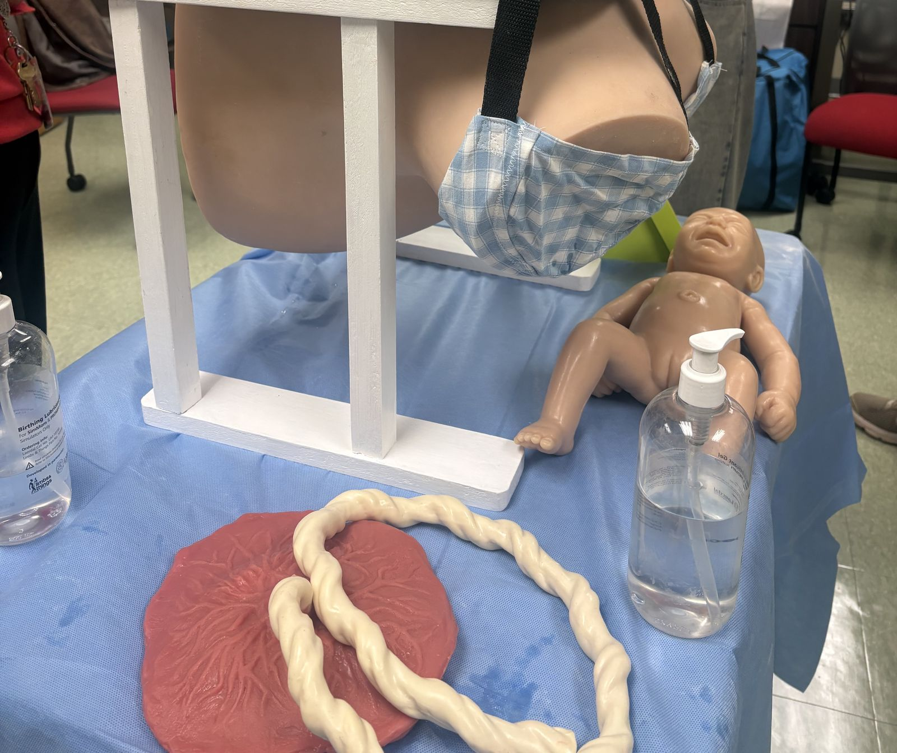
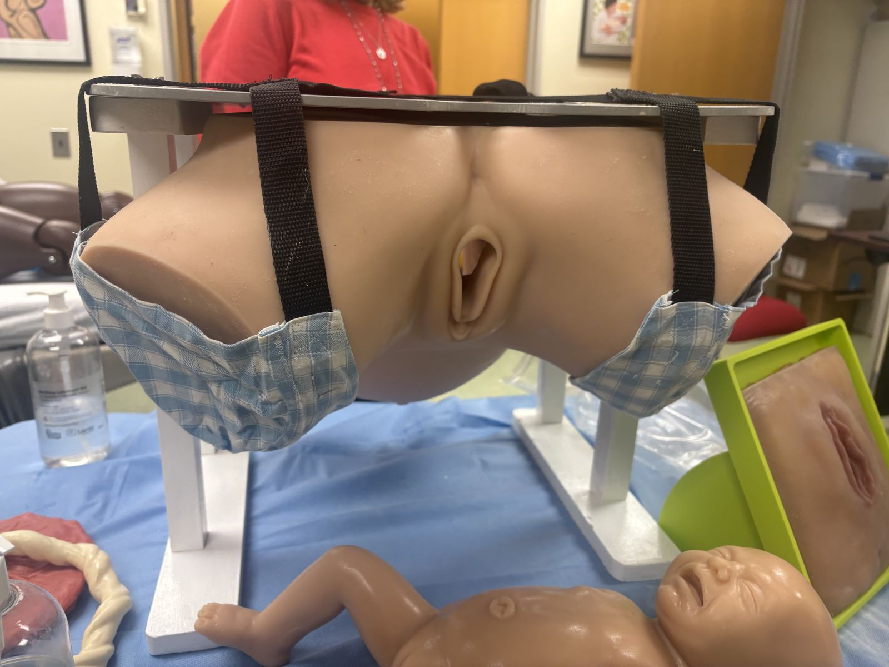
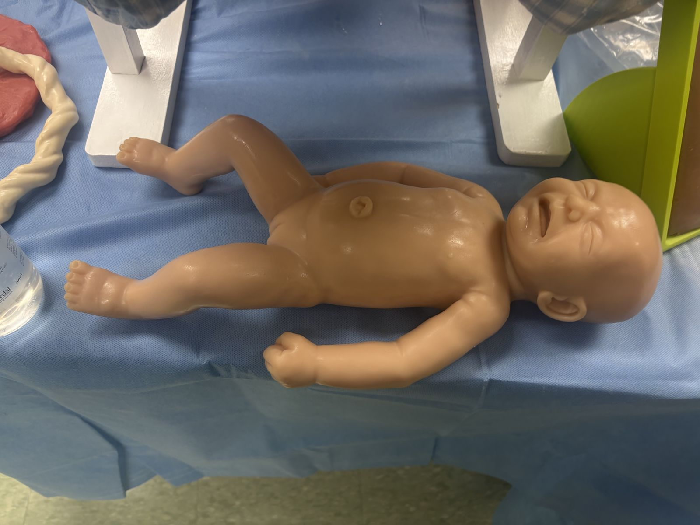
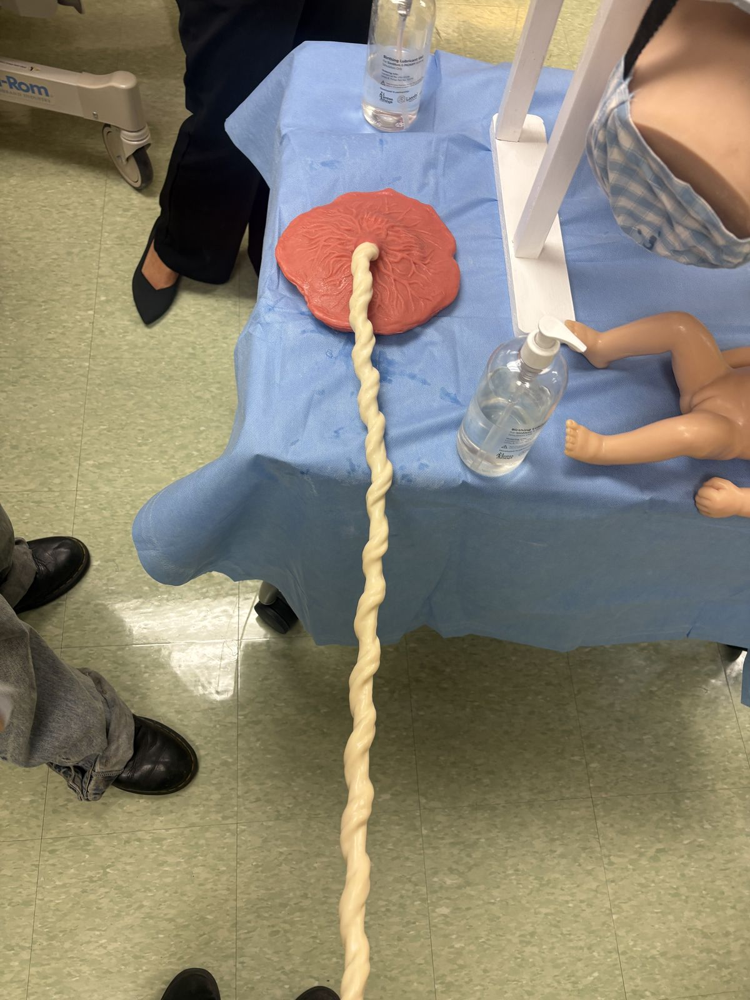
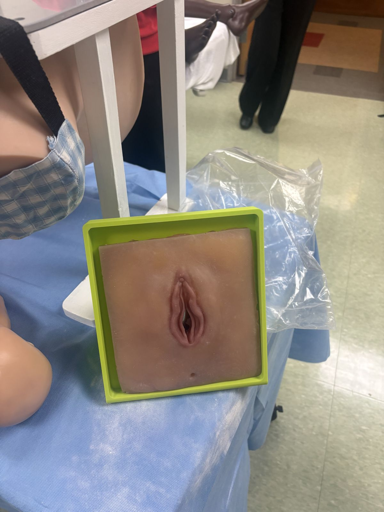

Overview
For our senior design capstone, my team and I are redesigning the obstetric simulator used by the Rutgers-Newark Midwifery Nursing program. Our goal is an affordable, versatile simulator that provides students with more comprehensive training in different birthing positions and emergency scenarios.
The simulator we're redesigning
The midwifery program's current preferred simulator is the MODEL-med Sophie and her Mum simulator. It's a low-fidelity simulator for practicing cephalic birth, breech birth, and shoulder dystocia, with add-ons like a placenta, a postpartum uterus, and a postpartum haemorrhage kit.
These photos show the midwifery program's current simulator: a pelvis model hung from a wooden stand, a newborn model, a placenta with an umbilical cord, and a separate pad for practicing perineal repair.
This is the setup our new design is meant to improve on.

Problems with the current simulator
We found these problems by interviewing the instructors and watching a demonstration of the simulator.
The simulator costs $16,500. It's made in Australia, so delivery, communication and replacement parts all take a long time.
Some of the anatomy isn't realistic. The umbilical cord is much thicker than a real one. In a real birth the baby is inside an amniotic sac, and sometimes the sac doesn't break on its own, so students need to learn to break it. We want to model that, possibly with a balloon.
It only works belly up or belly down. To use it belly down, it attaches to a metal plate on a stand, but the stand is wobbly and hard to assemble, so extra assistants have to hold it. It can't be put in side-lying or standing positions.
It's also hard to push the baby through by hand. Automating the pushing might be a fairly simple fix.
Defining the requirements
We started by interviewing midwifery instructors and students about how they train now and what they need. The requirements so far cover three areas:
Realistic materials. The mother and fetus need to feel and move like real tissue.
Birthing positions. The simulator has to work in positions beyond lying on the back.
Emergency scenarios. Students need to practice complicated deliveries, not just routine ones.
Next steps
Before building the full-size simulator, we plan to make scaled-down prototypes to test silicone materials and the casting process.
Photos



